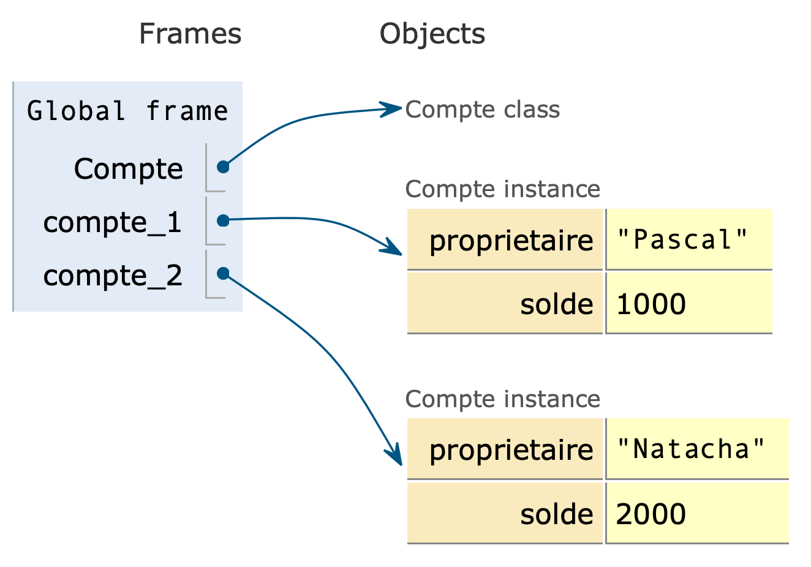
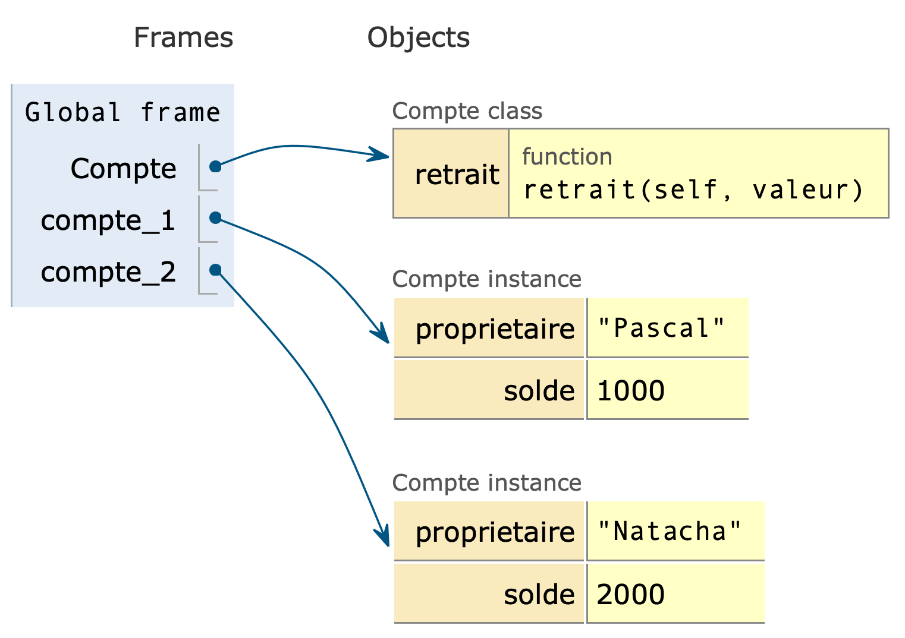

Programmation orientée objet
L’un des objectifs principaux de la notion d’objet est d’organiser des programmes complexes grâce aux notions :
- d’encapsulation ;
- d’abstraction ;
- d’héritage ;
- de polymorphisme ;
Remarque : Seules les deux premières notions apparaissent dans le programme de NSI.
Encapsulation
Le principe de l’encapsulation est de regrouper dans le même objet, les données (attributs) et les traitements (méthodes) qui lui sont spécifiques. Ainsi un objet est défini par ses attributs et ses méthodes.
Les objets partagent tous les mêmes méthodes mais les attributs leurs sont propres.
Abstraction
L’intérêt de la POO est qu’elle permet de créer des objets possédant un certain degré d’abstraction. Ce processus d’abstraction consiste à identifier des caractéristiques et des mécanismes communs pour un ensemble d’éléments.
- Attributs
- Ce sont les données de l’objets, ses caractéristiques.
- Méthodes
- Ce sont les comportements de l’objet.
Héritage
Le concept d’héritage permet de créer des sous-classes plus spécialisées à partir de classes plus générales (appelées super-classe).
- La super-classe (classe mère) déclare des méthodes et des attributs communs.
- La sous-classe hérite des attributs, des méthodes et du type de la super-classe et peut les redéfinir (cf. polymorphisme).
Polymorphisme
Le polymorphisme est la faculté pour une méthode portant le même nom mais appartenant à des classes distinctes héritées d’effectuer un travail différent. Cette propriété est acquise par la technique de la surcharge.
Compte bancaire
Dans ce premier exemple, on considère une classe qui modélise un compte bancaire.
Une classe est un nouveau type et un objet est une instance de classe
- Taper et exécuter le code suivant :
|
|
- Un nom de classe commence toujours (c’est une convention) par une lettre capitale ;
passest l’instruction Python qui indique de ne rien faire.
Quelles actions a déclenché le code précédent ?
Réponse
- Création d’un objet
Classe Compte; - Création d’une variable
Comptedans l’espace de nom global. Cette variable référence l’objetClasse Compte
- À la suite, taper et exécuter le code suivant :
|
|
Quelle action a déclenché le code précédent ?
Réponse
- Création d’un objet (ou instance) de la classe
Compte; - Création d’une variable
compte_1dans l’espace de nom global. Cette variable référence l’objet.
- Afin d’en découvrir davantage sur
compte_1, taper et exécuter l’instruction suivante :
|
|
Que nous apprend l’affichage à l’écran ?
Réponse
|
|
compte_1 appartient à l’espace de nom global et référence un objet de type Compte situé à l’adresse 0x7f7cc89bec88.
- « Définir une classe est équivalent à définir un nouveau type. » Quelle instruction Python pourrait démontrer cette affirmation ?
Réponse
|
|
Un objet possède des attributs dont les valeurs lui sont propres
- Un compte bancaire possède généralement un propriétaire et un solde. Taper et exécuter les lignes de code suivantes :
|
|
Les attributs (ou variable) proprietaire et solde appartiennent-ils à l’espace de nom global ?
Réponse
- Taper et exécuter les instructions qui permettent de créer un objet
compte_2dont le propriétaire se nomme « Natacha » et dont le solde est de 2000.
Réponse
|
|
- Les objets
compte_1etcompte_2partagent-ils les valeurs des attributs ?
Réponse
Les attributs sont des variables locales à l’objet.
Un objet possède un comportement
- Modifier le code de définition de la classe de façon à ce qu’il soit :
|
|
La fonction retrait est appelée méthode. Quelle est sa particularité ?
Réponse
La fonction retrait est locale à la classe ; c’est la raison pour laquelle on parle de méthode.
- La méthode
retraitest-elle locale à chaque objet ?
Réponse
- Natacha vient de retirer 50. Le code qui permet de prendre en compte ce retrait dans le programme est
|
|
- Observer l’effet de l’instruction.
- N’y a-t-il rien de surprenant dans l’appel de la méthode
retrait?
Réponse
La définition de la méthode retrait fait apparaître deux paramètres : self et valeur alors que lors de l’appel de la fonction on ne fournit qu’un seul argument qui semble être valeur.
- À quoi peut bien servir le paramètre
selfdans la définition d’une méthode ?
Réponse
Les méthodes étant partagées par les différentes instances (objets) d’une classe, elle ne peuvent à priori pas savoir sur quel objet elle doivent agir.
L’information sur cet objet est donc passée automatiquement par Python à la méthode. Pour être plus clair, l’instruction
|
|
est équivalente à
|
|
self (c’est une convention). Il représente l’objet sur lequel la méthode doit agir.
- Créer l’objet
compte_3et lui retrirer le montant 100. Quel est le problème ?
Réponse
|
|
On obtient l’erreur suivante :
|
|
C’est tout à fait normal car l’objet compte_3 ne possède par d’attribut solde.
Les attributs d’un objet doivent être initialisés à la création de cet objet
- Modifier le code de la classe
Compte:
|
|
- Est-ce que l’erreur apparue à la question 12. est toujours présente ?
- Afin de bien comprendre le rôle de la méthode
__init__, créer le comptecompte_4. À quoi sert cette méthode ?
Réponse
La méthode permet d’initialiser l’objet : ses attributs sont automatiquement créés, des valeurs par défaut peuvent même leur être affectées.
Toutes les variables ne sont pas des attributs
- Essayer d’imaginer comment déterminer simplement le nombre de comptes créés.
Réponse
L’idéal serait qu’un compteur compte soit incrémenté chaque fois qu’un compte est créé.
- Modifier le code de la classe
Compte:
|
|
La variable nbre_comptes est-elle locale aux objets ? Est-elle locale à la classe ?
Réponse
La variable nbre_comptes est locale à la classe : c’est une variable de classe.
- Modifier le code de la classe
Compte:
|
|
- Comment manipule-t-on une variable de classe ?